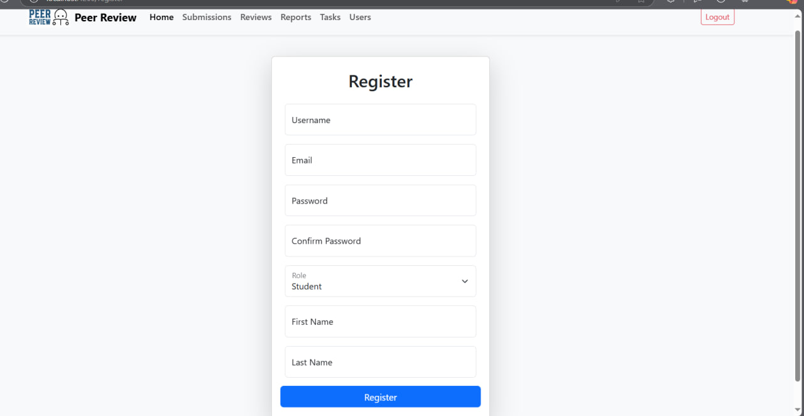

Authentication
Страница Authentication и связанные сервисы обеспечивают авторизацию и аутентификацию пользователей в системе. Это фундаментальная часть проекта, которая включает процессы входа, выхода и проверки текущего пользователя.

Основные возможности
- Авторизация пользователя:
-
Пользователь вводит свои учетные данные (email и пароль) и получает токен для взаимодействия с API.
-
Проверка текущего пользователя:
-
После авторизации клиент может запрашивать информацию о текущем пользователе, включая его роль и статус суперпользователя.
-
Выход пользователя:
- Удаление токена из локального хранилища и перенаправление на страницу входа.
Особенности интерфейса
Страница входа:
- Поля для ввода email и пароля.
- Кнопка "Login" для выполнения авторизации.
Перенаправление:
- После успешного входа пользователь перенаправляется на главную страницу (
/home). - Если пользователь не авторизован, он не может получить доступ к защищённым страницам.
login.component.ts:
import { Component } from '@angular/core';
import { Router } from '@angular/router';
import { FormsModule } from '@angular/forms';
import { CommonModule } from '@angular/common';
import { AuthService } from '../../services/auth.service';
@Component({
selector: 'app-login',
templateUrl: './login.component.html',
standalone: true,
imports: [FormsModule, CommonModule],
styleUrls: ['./login.component.css'],
})
export class LoginComponent {
username: string = '';
password: string = '';
currentUser: any = null;
errorMessage: string | null = null;
constructor(private authService: AuthService, private router: Router) {}
login(): void {
this.authService.login(this.username, this.password).subscribe({
next: (response) => {
localStorage.setItem('auth_token', response.auth_token);
this.authService.getCurrentUserDetails().subscribe({
next: (user) => {
this.currentUser = user;
localStorage.setItem('current_user', JSON.stringify(user));
this.router.navigate(['/home']);
},
error: () => {
this.errorMessage = 'Failed to fetch user details.';
},
});
},
error: () => {
this.errorMessage = 'Invalid username or password.';
},
});
}
navigateToHome(): void {
this.router.navigate(['/home']);
}
}
API эндпоинты
- Авторизация:
POST /auth/token/login/-
Возвращает токен доступа.
-
Проверка текущего пользователя:
GET /auth/users/me/-
Возвращает данные текущего пользователя.
-
Выход:
POST /auth/token/logout/- Удаляет токен доступа.
Работа с компонентом
Основные переменные
- credentials:
-
Объект, содержащий email и пароль, вводимые пользователем.
-
currentUser:
-
Данные текущего пользователя, загружаемые после успешной авторизации.
-
isAuthenticated:
- Логическое значение, указывающее, авторизован ли текущий пользователь.
Алгоритм авторизации
- Пользователь вводит email и пароль на странице входа.
- Нажимает кнопку "Login".
- Данные отправляются на сервер через API
/auth/token/login/. - Если авторизация успешна, токен сохраняется в локальном хранилище, а пользователь перенаправляется на
/home.
Алгоритм выхода
- Пользователь нажимает кнопку "Logout".
- Токен удаляется из локального хранилища.
- Пользователь перенаправляется на страницу
/login.
Особенности работы
- Проверка токена:
-
На каждой защищённой странице вызывается метод проверки токена, чтобы убедиться, что пользователь авторизован.
-
Хранение токена:
-
Токен сохраняется в
localStorageдля использования в заголовках запросов. -
Суперпользователь:
- Через API
/auth/users/me/возвращается флагis_superuser, который используется для отображения дополнительных возможностей.
Пример данных API
POST /auth/token/login/
Тело запроса:
{
"email": "user@example.com",
"password": "password123"
}